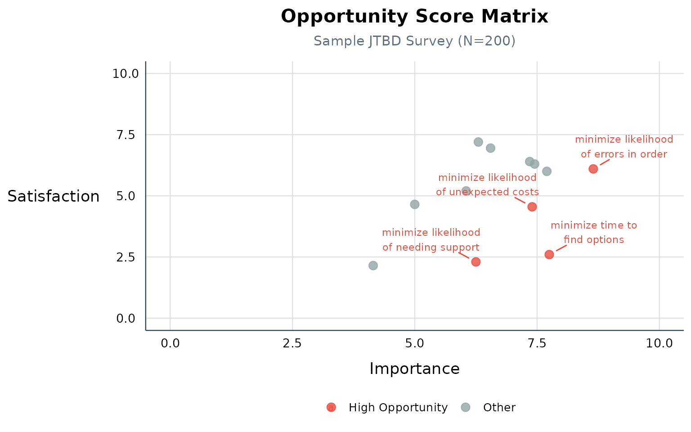

What is Outcome-Driven Innovation?
Jobs-to-Be-Done (JTBD) theory says customers “hire” products to get a job done. Outcome-Driven Innovation (ODI), developed by Tony Ulwick, turns this into a quantitative framework: survey users on how important each outcome is and how satisfied they are with current solutions, then calculate where the biggest gaps are.
The opportunity score formula:
opportunity = importance + max(0, importance - satisfaction)When importance exceeds satisfaction, the gap amplifies the opportunity. When satisfaction exceeds importance, opportunity equals importance (the floor). Scores range from 0-20, with anything above 10 considered a high-opportunity outcome.
Quick Start
The sample dataset contains 200 survey respondents rating 12 objectives across 3 job steps:
# See the column structure
names(jtbd_sample)[1:8]
#> [1] "caseid"
#> [2] "segment"
#> [3] "gender"
#> [4] "age_group"
#> [5] "income"
#> [6] "education"
#> [7] "tenure"
#> [8] "imp__researching.minimize_time_to_find_options"Calculate Scores
scores <- get_jtbd_scores(jtbd_sample)
scores[, c("job_step", "objective", "imp.all", "sat.all", "opp.all")]
#> # A tibble: 12 × 5
#> job_step objective imp.all sat.all opp.all
#> <chr> <fct> <dbl> <dbl> <dbl>
#> 1 researching minimize_time_to_find_options 7.75 2.6 12.9
#> 2 purchasing minimize_likelihood_of_errors_in_order 8.65 6.1 11.2
#> 3 purchasing minimize_likelihood_of_unexpected_costs 7.4 4.55 10.2
#> 4 onboarding minimize_likelihood_of_needing_support 6.25 2.3 10.2
#> 5 researching minimize_likelihood_of_missing_relevant_… 7.7 6 9.4
#> 6 purchasing minimize_time_to_complete_transaction 7.45 6.3 8.6
#> 7 researching minimize_time_to_evaluate_options 7.35 6.4 8.3
#> 8 purchasing minimize_time_to_receive_confirmation 6.05 5.2 6.9
#> 9 onboarding minimize_likelihood_of_confusion_during_… 6.55 6.95 6.55
#> 10 onboarding minimize_time_to_reach_first_value 6.3 7.2 6.3
#> 11 onboarding minimize_time_to_get_started 4.15 2.15 6.15
#> 12 researching minimize_time_to_understand_pricing 5 4.65 5.35The highest-opportunity objectives have high importance and low satisfaction.
Compare Segments
comparison <- get_jtbd_scores.comparison(jtbd_sample, "segment")
#> Found 3 segments with n > 30.
# Show opportunity scores by segment
opp_cols <- grep("^opp\\.", names(comparison), value = TRUE)
comparison[, c("job_step", "objective", opp_cols)]
#> # A tibble: 12 × 6
#> job_step objective opp.all opp.casual opp.new_user opp.power_user
#> <chr> <fct> <dbl> <dbl> <dbl> <dbl>
#> 1 researching minimize_time_to_… 12.9 12.4 13.5 13.1
#> 2 purchasing minimize_likeliho… 11.2 13.6 8.65 10.3
#> 3 purchasing minimize_likeliho… 10.2 5.8 12.7 14.8
#> 4 onboarding minimize_likeliho… 10.2 8.89 9.42 12.4
#> 5 researching minimize_likeliho… 9.4 11.1 5.58 10.3
#> 6 purchasing minimize_time_to_… 8.6 8.15 6.92 10.4
#> 7 researching minimize_time_to_… 8.3 6.3 8.85 11.8
#> 8 purchasing minimize_time_to_… 6.9 7.9 6.92 6.27
#> 9 onboarding minimize_likeliho… 6.55 6.3 4.42 10
#> 10 onboarding minimize_time_to_… 6.3 5.43 7.12 6.72
#> 11 onboarding minimize_time_to_… 6.15 8.89 7.31 2.84
#> 12 researching minimize_time_to_… 5.35 5.19 4.62 6.12Opportunity Matrix
plot_opportunity_matrix(scores, subtitle = "Sample JTBD Survey (N=200)")
Opportunity Score Matrix
Data Format
Your data must follow this column naming convention:
-
imp__job_step.objective_namefor importance columns -
sat__job_step.objective_namefor satisfaction columns - Values should be factors with levels 1-5
Example column names: -
imp__researching.minimize_time_to_evaluate_options -
sat__researching.minimize_time_to_evaluate_options
See ?jtbd_sample for a complete example dataset and
vignette("data-preparation") for SPSS import
instructions.